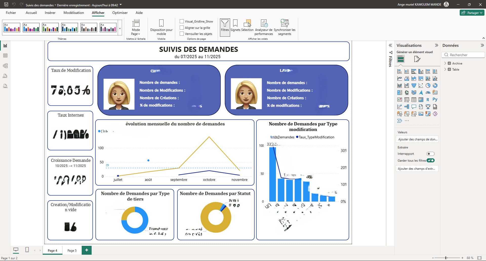
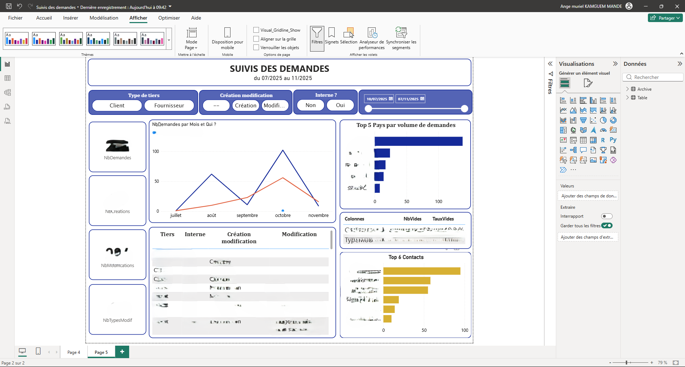

Suivi des Demandes – Créations & Modifications

🎯 Objectif :
Fournir une vision claire et opérationnelle de l’activité de traitement des demandes internes,
en distinguant les créations, modifications, demandes internes et la répartition par type de tiers
(clients / fournisseurs).
🚀 Particularité :
Dashboard construit avec une forte granularité :
✔ vue détaillée par agent (Coralie / Laura)
✔ suivi mensuel de l’activité
✔ taux de modifications vs créations
✔ catégorisation automatique des types de demandes
✔ analyses croisées client/fournisseur
✔ top contacts & top motifs
✔ filtres avancés (tiers, interne, création, modification…)
📊 Indicateurs clés :
- Nombre total de demandes
- Nombre de créations / modifications
- Taux de modifications
- Croissance d’un mois à l’autre
- Répartition Client vs Fournisseur
- Top pays par volume de demandes
- Statut : Terminé / Rejeté
- Nombre de types de modification
🛠️ Outils & Méthodes :
Power BI (DAX, Power Query), design UX en tuiles,
segmentation temporelle, analyse activité par agent,
visualisation dynamique multi-critères.
🔒 IMPORTANT :
Pour des raisons de confidentialité, le dashboard complet ainsi que les données utilisées
ne peuvent pas être publiés car ils contiennent des informations internes sensibles.
📸 Aperçu du Dashboard
